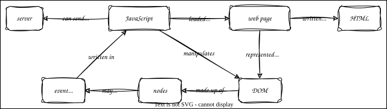

JavaScript in the Browser
Overview

Outline
- JavaScript was created to make web pages interactive
- Load into page (several ways)
- Trigger execution (also several ways)
- Manipulate Document Object Model (DOM)
log_on_load.html- Put code directly in
<script>tag in head of page - Executed as the page loads
- View output in console tab in browser's developer tools
- But this is not reliable
- Code may run while browser is still converting HTML to DOM (or loading other assets)
- Put code directly in
show_headings.htmlfinds things in the DOMdocumentrefers to the content of the pagegetElementsByTagNamefinds nodes match a CSS selector
- But it doesn't show anything
- Code may run etc.
show_headings_onload.htmlis a better approach- Define a function
- Use the
onloadattribute ofbodyto run it when the body has fully loaded
emphasize_headings.htmlmodifies the DOM- JavaScript changes in-memory representation of page
- Browser decides what to re-draw and when
emphasize_multistep.htmldoes the same thing by explicitly manufacturing new nodesbutton_click.htmladds a button with an event handler- Browser standards define lots of different events you can listen to
- You provide the function, you browser calls it when something happens
emphasize_click.htmlshow_hide.htmlcontrols visibility of elements- But now we have to manage state
async_fetch.htmlintroduces two new ideas- Put the code in
async_fetch.js - Use
asyncandawaitkeywords to wait for things server.pyreturns RGB color components- Use
styleproperty rather thansetAttributebecause style can have many sub-properties
- Put the code in